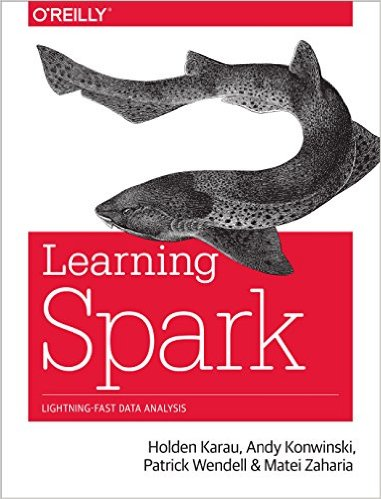
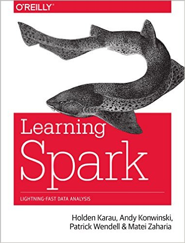

Students taking this course are formally enrolled in one of four course numbers:
All students meet in the same class session, but have different assignments — so make sure you're doing the right assignments!
Here's who's involved in the course:
For all course numbers: If you have general questions, post on Piazza. If you have personal concerns, send email to uwaterloo-bigdata-2018w-staff@googlegroups.com, which will reach the instructors and the TAs. General questions sent to the mailing list will be redirected to Piazza. Unless you specifically have a reason to email the instructors directly, you're better off emailing the staff list since the TAs may be able to help you directly (and in fact, for routine issues the instructors will forward your email to the staff list anyway).
The most recent version of all materials for this course will be posted on this website, including the syllabus, readings, slides, and assignments. Please check the site frequently for updates.
See the "software" page for instructions on getting access to MapReduce and Spark. Throughout this course, you'll also be using Bespin, which is a software library that contains reference implementations of "big data" algorithms in MapReduce and Spark.
The textbooks for this course are:
 

Note that the two O'Reilly books are optional but recommended. They are mostly there to help you with the mechanics of MapReduce and Spark (API, command-line invocations, etc.). However, the same material can be found in a multitude of freely-available sources on the web (although not organized as well). Note that the Spark book is a bit outdated since it covers Spark 1.3; we're using Spark 2.1. Readings from other sources will be assigned as appropriate.
Components of the final grade for CS 451 are as follows:
| Component | Weight |
| Assignment 0 | 5% |
| Assignment 1 | 5% |
| Assignment 2 | 5% |
| Assignment 3 | 5% |
| Assignment 4 | 10% |
| Assignment 5 | 10% |
| Assignment 6 | 10% |
| Assignment 7 | 5% |
| Final Exam | 45% |
| Total | 100% |
The homework assignments are to be completed individually. See below section on Academic Integrity. Assignments are due before the class indicated on the syllabus (i.e., 1:00pm).
Late policy: For assignments up to 24 hours late, we will take the grade you would have gotten and multiply it by 0.75 (i.e., 25% reduction). For assignments more than 24 hours late but less than 48 hours late, we will take the grade you have gotten and multiply it by 0.5 (i.e., 50% reduction). Assignments more than 48 hours late will not be accepted. By assumption, we will mark your assignment at the deadline if you want us to "hold off" on marking (and take the late penalty), you must let us know, and you must let us know when the assignment is ready for marking so we can compute the late penalty appropriately. Email the staff mailing list for these communications.
Assignment marking reappraisal requests: If you believe we have made an error marking your assignment, you may request that your assignment be reappraised. Please email staff with the request detailing the issue. Note that for each request, the entire assignment will be reconsidered, in addition to the highlighted issues. This means that your grade might be adjusted up or down—the latter case if we found an error that was missed the first time.
Components of the final grade for CS 651 are as follows:
| Component | Weight |
| Assignments | 60% |
| Final Exam | 20% |
| Final Project | 20% |
| Total | 100% |
The relative weight of each assignment is the same as it is in the CS 451 breakdown. CS 651 includes an additional group final project.
All work in this course is to be done individually unless otherwise noted (e.g., the group final project for CS 651).
The penalty for plagiarism (first offense) is an assigned grade of 0 for that particular component and a 10% reduction of the final grade. Note that this penalty applies to both the individual(s) giving as well as the individual(s) receiving the assistance. In addition, a letter detailing the offense will be sent to the Associate Dean of Undergraduate Studies, meaning that subsequent offenses will carry more severe penalties, up to suspension or expulsion.
To avoid inadvertently plagiarizing, you should discuss assignment issues with other students only in a very broad and high-level fashion. Do not take notes during such discussions and do not looking at anyone else's code, on screen or on paper. If you find yourself stuck, contact the TAs or the instructor for help. You are allowed to search the web for information about general issues, but do not try to search for solutions online (or ask for help online on mailing lists or in forums such as StackOverflow, etc.). The assignments are designed so that solutions are not available online, but if you inadvertently stumble onto a solution to any of the assignments, do not look at it. If you do find a solution online, however, please let us know—we will appreciate it and not construe it as plagiarism (unless, of course, you actually do copy the solution).
Senate Undergraduate Council has asked us to post the following paragraphs:
Academic Integrity: In order to maintain a culture of academic integrity, members of the University of Waterloo community are expected to promote honesty, trust, fairness, respect and responsibility.
Grievance: A student who believes that a decision affecting some aspect of his/her university life has been unfair or unreasonable may have grounds for initiating a grievance. Read Policy 70 - Student Petitions and Grievances, Section 4.
Discipline: A student is expected to know what constitutes academic integrity, to avoid committing academic offenses, and to take responsibility for his/her actions. A student who is unsure whether an action constitutes an offense, or who needs help in learning how to avoid offenses (e.g., plagiarism, cheating) or about "rules" for group work/collaboration should seek guidance from the course professor, academic advisor, or the Undergraduate Associate Dean. When misconduct has been found to have occurred, disciplinary penalties will be imposed under Policy 71 - Student Discipline. For information on categories of offenses and types of penalties, students should refer to that policy.
Avoiding Academic Offenses: Most students are unaware of the line between acceptable and unacceptable academic behaviour, especially when discussing assignments with classmates and using the work of other students. For information on commonly misunderstood academic offenses and how to avoid them, students should refer to the Faculty of Mathematics cheating and student academic discipline guidelines.
Appeals: A student may appeal the finding and/or penalty in a decision made under Policy 70 - Student Petitions and Grievances (other than regarding a petition) or Policy 71 - Student Discipline if a ground for an appeal can be established. Read Policy 72 - Student Appeals.
Illness policy: From time to time students become ill or have ongoing medical conditions that prevent them from meeting academic obligations. For these cases, please consult the university policy.
Accommodations for Religious Holidays and Other Special Circumstances. Students wishing to discuss accommodations for religious holidays on dates that assignments are due, or other circumstances not addressed in this course information page, should discuss those circumstances with me before the third class session in order to permit adequate time for planning. Only accommodations for unforeseeable circumstances will be considered after that date.
Note for students with disabilities: AccessAbility Services, located in Needles Hall, collaborates with all academic departments to arrange appropriate accommodations for students with disabilities without compromising the academic integrity of the curriculum. If you require academic accommodations to lessen the impact of your disability, please register with them at the beginning of each academic term.